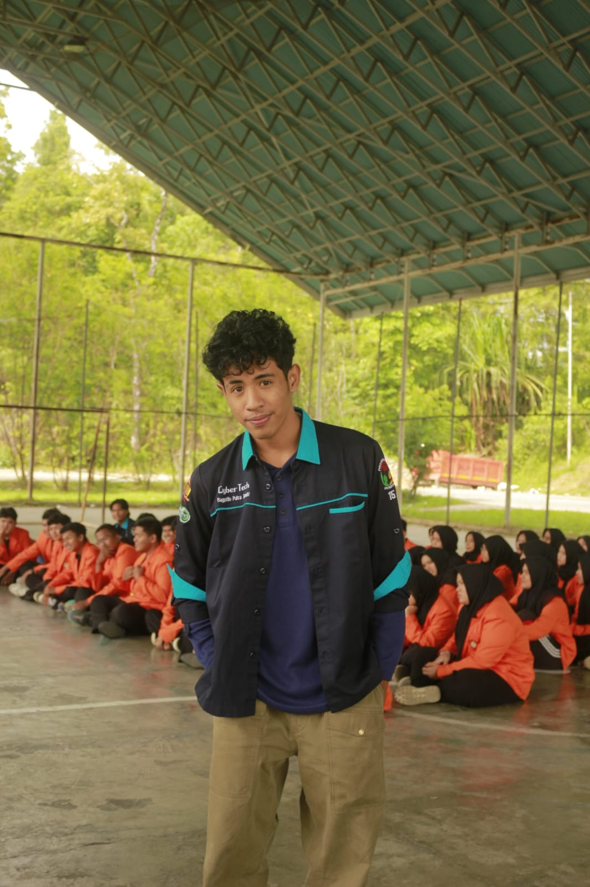

Software Developer Agency
Menyatukan logika sistem dan kecerdasan buatan untuk hasil yang benar-benar terukur.
Twolines membantu bisnis merancang, membangun, dan menjaga produk digital dengan fondasi engineering yang kuat, proses yang rapi, dan implementasi AI yang relevan.
System-first
Arsitektur solid dan maintainable
AI-ready
Otomasi, analitik, dan alur kerja cerdas
Quality-driven
Validasi detail sebelum rilis ke produksi
Engineering
AI Enablement
Synergizing Thoughts, Achieving Goals.
Dua jalur pemikiran, satu arah eksekusi. Kami merangkai sistem yang kokoh dan adaptif agar strategi bisnis tidak berhenti di ide.
Fokus utama
- Business analysis yang tajam
- Eksekusi teknis yang disiplin
- Komunikasi proyek yang transparan
Filosofi
Keseimbangan dua garis pemikiran.
Twolines dibangun dari keyakinan bahwa software terbaik lahir saat logika sistem yang terstruktur bertemu dengan intuisi, eksperimen, dan kemampuan adaptasi dari kecerdasan buatan.
Nama ini juga terinspirasi dari kata "TULEN", yang berarti murni, asli, dan memiliki nilai kejujuran dalam proses penciptaan. Dalam konteks TwoLines, "TULEN" melambangkan komitmen kami untuk membangun solusi teknologi yang autentik, berkualitas, dan benar-benar memberikan manfaat nyata bagi pengguna.
Bagi kami, teknologi bukan sekadar fitur. Teknologi harus menyederhanakan proses, mempercepat keputusan, dan memberi dampak yang jelas untuk operasional maupun pertumbuhan bisnis.
Garis Biru Dengan Kurung Awal
Mewakili system thinking, arsitektur, logika, coding discipline, dan keputusan teknis yang rasional.
Garis Hijau
Mewakili pemikiran manusia, AI, otomasi, dan keberanian untuk membangun solusi yang lebih adaptif.
Layanan
Kapabilitas inti untuk membangun produk digital yang siap dipakai dan dikembangkan.
Layanan kami disusun untuk mendukung siklus produk dari analisis kebutuhan sampai quality control dan delivery.
System Analysis & Development
Menerjemahkan kebutuhan bisnis menjadi alur kerja, arsitektur, dan aplikasi yang bersih, scalable, dan mudah dipelihara.
AI Solutions
Mengimplementasikan AI untuk automasi proses, analitik, pengolahan data, dan pengalaman pengguna yang lebih cerdas.
Quality Assurance
Menjaga kualitas fitur, flow, dan stabilitas produk melalui pengujian yang sistematis sebelum sistem digunakan secara penuh.
Agile Project Management
Mengelola eksekusi proyek agar milestone jelas, risiko terpantau, dan keputusan bisnis bisa diambil lebih cepat.
Tim Kami
Orang-orang yang menjaga keseimbangan antara strategi, eksekusi, dan kualitas.
Struktur tim ini menekankan peran yang saling melengkapi, dari pengelolaan proyek sampai implementasi AI dan quality assurance.

Bagastio P. Joandri
Project Manager
Menjaga ritme kolaborasi tim, arah delivery, dan komunikasi proyek agar tetap fokus pada tujuan bisnis.

Ahsan Ramadhan
Lead Programmer & System Analyst
Menyusun logika sistem dan keputusan teknis agar kebutuhan bisnis dapat diterjemahkan ke aplikasi yang efektif.

Jeli Mayora
AI Specialist
Mengidentifikasi peluang integrasi AI yang realistis untuk meningkatkan efisiensi, insight, dan otomasi.

Maulida Aprila
Quality Assurance
Memastikan detail implementasi berjalan sesuai standar, stabil di lapangan, dan siap digunakan pengguna akhir.
Kontak
Siap menyelaraskan ide, sistem, dan target bisnis Anda.
Jika Anda butuh partner untuk membangun sistem baru, meningkatkan produk yang sudah ada, atau mengeksplorasi implementasi AI yang masuk akal, Twolines siap berdiskusi.
Mulai Konsultasi Proyek